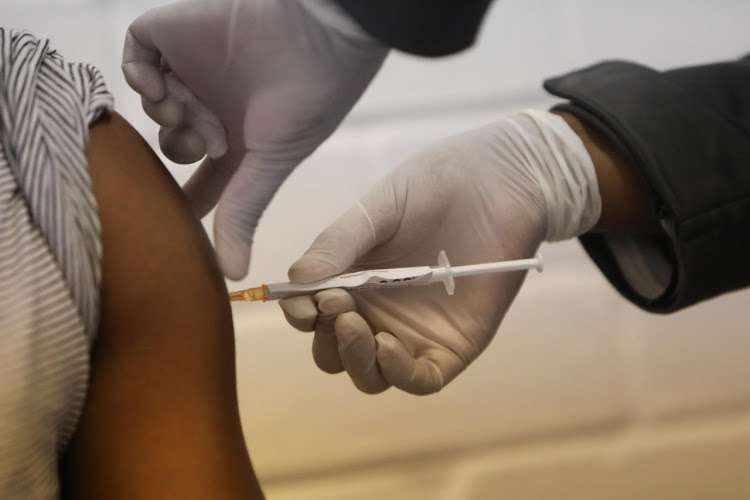

Janssen Vaccine
About Janssen Vaccine
Introduction
Janssen is a single-dose vaccine, developed by the Janssen Pharmaceutical Companies of Johnson & Johnson, to prevent COVID-19 in individuals 18 years of age and older. It has not been approved or licensed by the U.S. Food and Drug Administration (FDA), but has been authorized by FDA through an Emergency Use Authorization (EUA) for active immunization to prevent Coronavirus Disease 2019 (COVID-19) in individuals.
Technology Used
It leverages the AdVac® vaccine platform （https://www.janssen.com/infectious-diseases-and-vaccines/vaccine-technology）, a unique and proprietary technology that was also used to develop and manufacture Janssen’s European Commission-approved Ebola vaccine regimen.
Storage
The Johnson & Johnson COVID-19 single-dose vaccine is compatible with standard vaccine storage and distribution channels with ease of delivery to remote areas. The vaccine is estimated to remain stable for two years at -4°F (-20°C), and a maximum of three months at routine refrigeration at temperatures of 36-46°F (2 to 8°C). The Company will ship the vaccine using the same cold chain technologies it uses today to transport treatments for cancer, immunological disorders and other medicines. The COVID-19 vaccine should not be re-frozen if distributed at temperatures of 36°F–46°F (2°-8°C).
How It Works
The Janssen COVID-19 Vaccine will be given to you as an injection into the muscle. The Janssen COVID-19 Vaccine vaccination schedule is a single dose.
Risk & Advice
Side effects that have been reported with the Janssen COVID-19 Vaccine include：
- Injection site reactions: pain, redness of the skin, and swelling.
- General side effects: headache, feeling very tired, muscle aches, nausea, fever.
There is a remote chance that the Janssen COVID-19 Vaccine could cause a severe allergic reaction. A severe allergic reaction would usually occur within a few minutes to one hour after getting a dose of the Janssen COVID-19 Vaccine. For this reason, your vaccination provider may ask you to stay at the place where you received your vaccine for monitoring after vaccination. Signs of a severe allergic reaction can include:
- Difficulty breathing
- Swelling of face and throat
- Fast heartbeat
- Rash all over body
- Weakness and dizziness
Tell the vaccination provider about all of your medical conditions, including if you:
- have any allergies
- have fever
- have bleeding disorder
- are pregnant/breastfeeding
- are immunocompromised
- have fever
Pros & Cons
The Johnson & Johnson vaccine can be kept in regular refrigerators, and it doesn't require as stringent cold-storage conditions as the Moderna and the Pfizer-BioNTech vaccines do. That makes it easier to transport and distribute, which could make it a more practical option for mobile or drive-thru vaccination sites and for rural communities.
It is a one shot vaccine which can do that quicker than two. With Janssen’s shot, immune protection will become robust within a month, without having to go back in for a second booster. Not only is the J&J vaccine simpler to give out, requiring no second appointments, it's also significantly cheaper to produce.
While it might not be as effective at preventing symptomatic Covid-19 as the mRNA vaccines, the Johnson & Johnson vaccine is just as good at preventing hospitalizations and deaths.